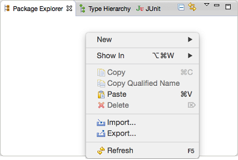
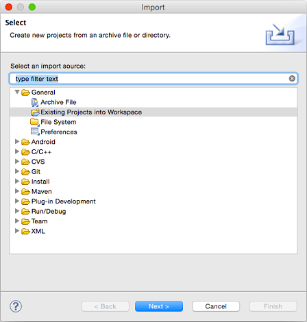
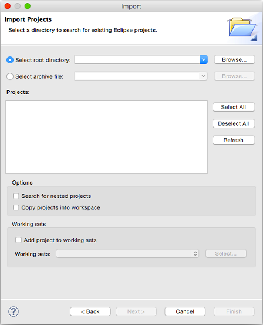

This documentation aims at helping you integrate our MyScript widgets and components into your applications. It is intended for Android developers with good knowledge of object-oriented programming. To install and integrate our MyScript widgets and components on Android, you must be using the latest version of Eclipse and have all Android tools and SDK installed and configured properly.
To understand how our widgets interact with each other and how that may impact your work, see the Dependencies section.
- Unzip the archive folder you have downloaded on the developer portal (MyScript_ATK-android.zip) to obtain the following tree:
- MyScript_ATK-android-1.3.0
- doc
Contains the whole documentation (installation, functional, reference).- libs
Contains the libraries and binaries.- samples
Contains the samples, showing basic use cases.- third_part
Contains the ATK and third-party licenses.- atk-info.json
Contains information about the version numbers.- Add the required widget or component as a project (and its dependencies) by following this procedure in Eclipse:
- Under Package Explorer, right-click and select the Import... menu option.

- Select General > Existing Projects into Workspace and click Next.

- Click Browse to add your folder, then ensure that all project folders are checked and click Finish.

- Download your certificate.
To learn how to create and download a certificate, follow this procedure.